S44#
Avtor: Tiara Pšeničnik
Datum izdelave: 2024-05-26
Koda seminarja: S44
Vhodni podatek#
Povezava do datoteke z vhodnim podatkom: S44
Rezultati analiz#
Moj protein#
Iz plazmidne sekvence sem morala najprej dobiti metagenomsko zaporedje proteina. Primerjala sem zaporedja dveh plazmidov z algoritmom Needleman-Wunsch za globalno poravnavo. Ugotovila sem, da se plazmida razlikujeta v nukleotidih, ki so v mojem plazmidnem zaporedju na mestih od 1321-2348 (sliki 1 in 2). To zaporedje (z dolžino 1028) sem vstavila v blastx in iskala po metagenomskih zaporedjih.
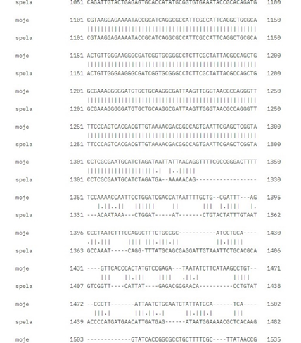
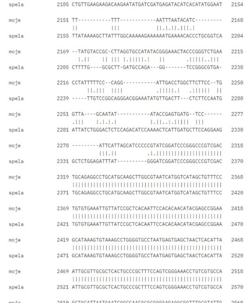
Iz rezultatov v blastx lahko glede na 100% identičnost sklepam, da je moj protein najverjetneje dihidropteroat sintaza (slika 3).
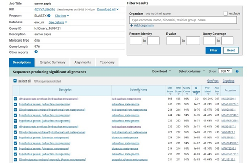
Z dostopno kodo v blast-u lahko dostopam do metagenomskega zapisa za dihidropteroat sintazo v GenBank-u (sliki 4 in 5).
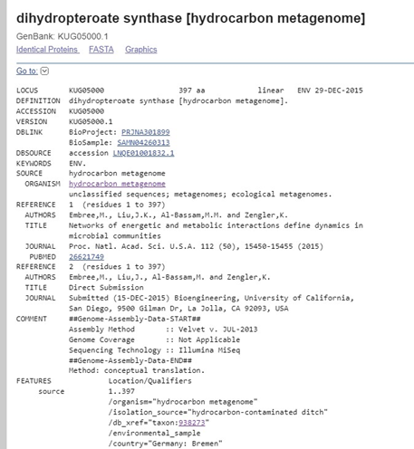
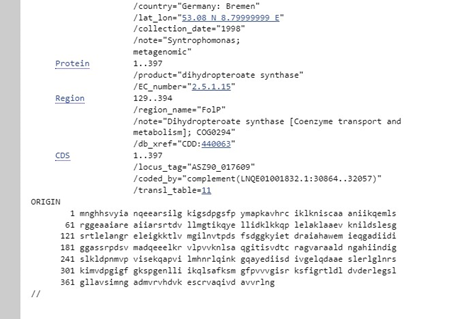
Aminokislinski zapis za sintazo iz GenBank-a sem prenesla v blastp. Rezultati iskanja so pokazali, da je moja dihidropteroat sintaza najverjetneje iz bakterije, vrste Syntrophomonadaceae (slika 6).
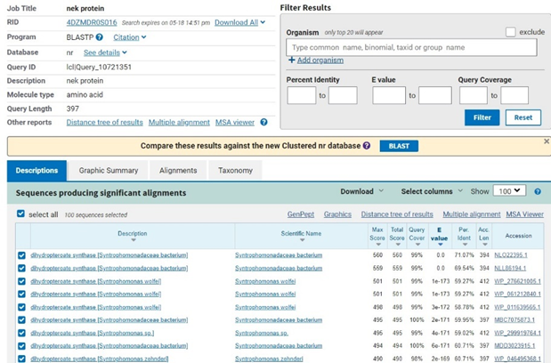
Na UniProt-u sem poiskala dihidropteroat sintazo iz bakterije Syntrophomonadaceae, z dostopno kodo A0A970SX96. Iz tega lahko razberem, da je moj protein sestavljen iz 397 aminokislinskih ostankov (sliki 7, 8 in 9).
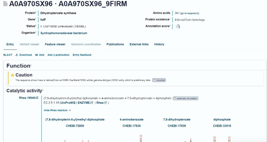
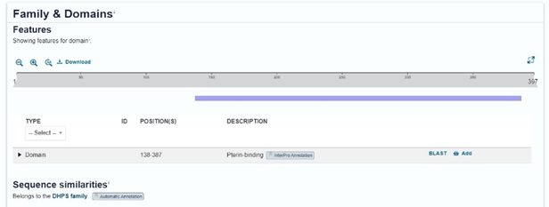
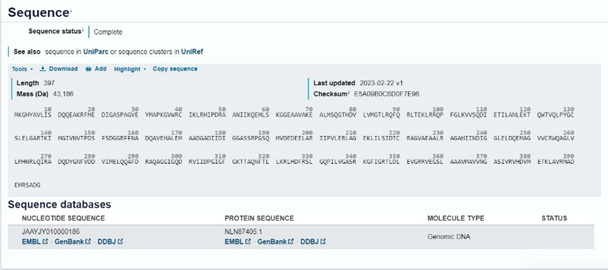
Na GenBank-u imam tako nukleotidni in aminokislinski zapis za naš protein, z dostopno kodo JAAYJY010000186 (slika 10).
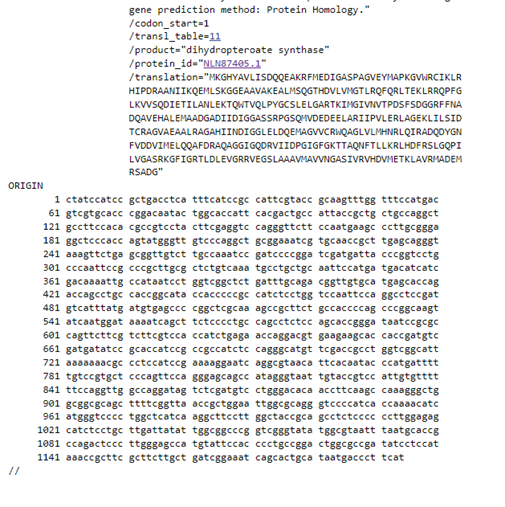
Iz UniProt-a lahko dostopamo do InterPro, kjer vidimo, da ima naš protein glavno domeno, z imenom pterin vezavna domena (slika 11).
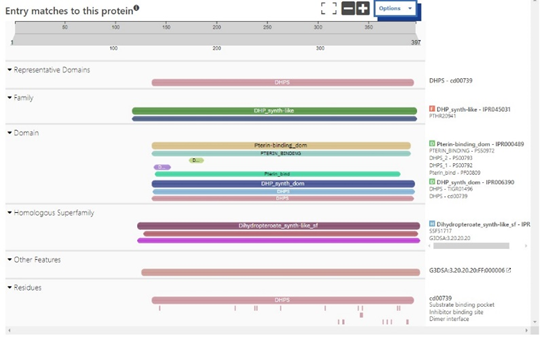
Podoben protein#
V UniProt-u za moj protein nekateri podatki manjkajo, zato sem morala poiskati podoben protein. To sem naredila tako, da sem z mojim zaporedjem v blastp poiskala podoben protein iz drugih organizmov, ki je anotiran in ima najnižjo vrednost E ter najvišjo identičnost. Dostopna koda P28822 na UniProt-u pokaže najbolj podoben protein dihidropteroat sintaze iz bakterije Bacillus subtilis (slika 12).
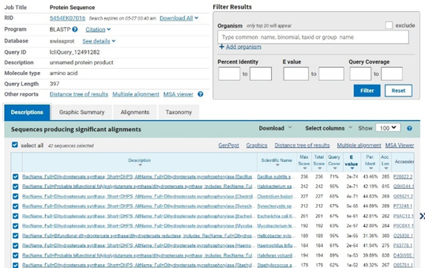
V UniProt-u sem poiskala ta podoben protein, s katerim sem lahko sklepala značilnosti mojega proteina, kot so PTM, lokacija v organizmu in funkcija proteina (slike 13,14 in 15).
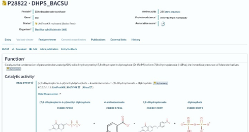
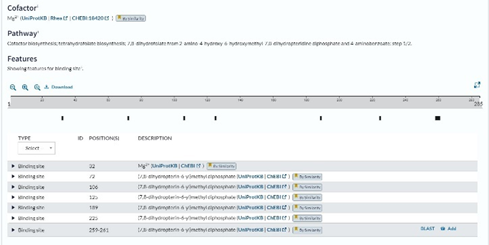
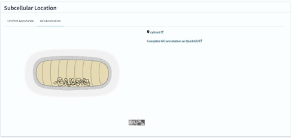
Do sedaj sem ugotovila nekaj značilnosti mojega proteina, ki so navedene v tabeli:
značilnost |
|
|---|---|
ime in izvorni organizem proteina |
dihidropteroat sintaza, bakterija Syntrophomonadaceae |
lokalizacija |
citosol |
velikost proteina |
397 AKO |
domenska zgradba |
pterin vezavna domena |
post-translacijske modifikacije |
/ |
funkcija proteina |
Katalizira kondenzacijo para-aminobenzoata (pABA) s 6-hidroksimetil-7,8-dihidropterin difosfatom (DHPt-PP), da nastane 7,8-dihidropteroat (H2Pte), neposredni predhodnik folnih derivatov. Za delovanje potrebuje tudi magnezijev ion. |
Sorodni proteini#
Sorodne proteine glede na aminokislinsko zaporedje mojega proteina sem ugotovila tako, da sem zapis za moj protein prenesla v blastp (slika 16). S tem sem tudi ugotovila, da so si med seboj najbolj podobni v pterin vezavni domeni, ki je tudi najbolje ohranjena med organizmi (sliki 17 in 18). Zaporedja sem iz blastp prenesla v Clustal Omega, iz tam pa sem kodo za filogenetsko drevo kopirala v phylo.io, da sem bolj nazorno videla, kako so si proteini, vključno z mojim, evolucijsko medsebojno sorodni. Moj protein je najbolj soroden dihidropteroat sintazama 2 iz Mycobacterium bovis in iz Mycobacterium leprae (slika 19).
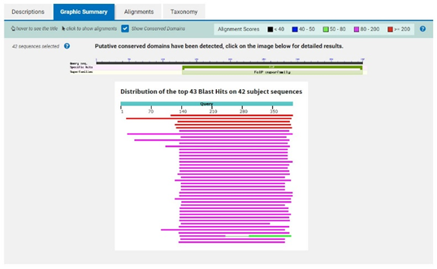
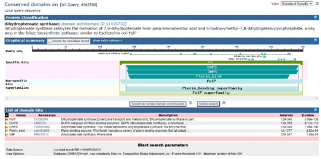
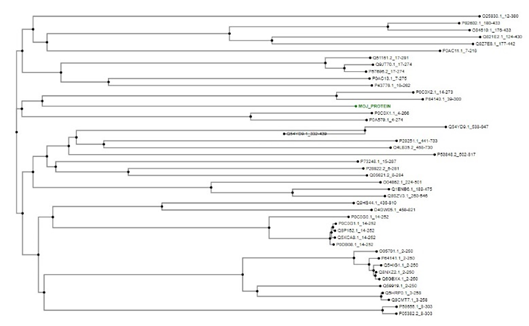
Funkcijska podobnost#
Podobne proteine glede na funkcijo mojega proteina sem raziskala s programom STRING. Ugotovila sem, da je moj protein po funkciji najbolj podoben dihidroneopterin aldolazi, HPPK, GTP ciklohidrolazi, aminotransferazi II, betalaktamazi, ADC sintazi ter proteinoma RibD in RibBA (sliki 20 in 21).
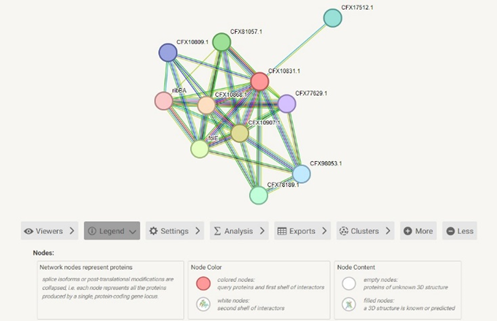
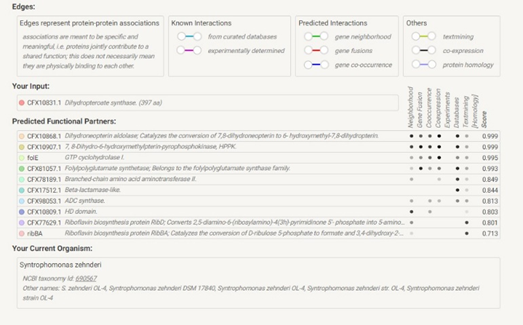
Podobni evkariontski proteini#
Glede na to, da je moj protein iz prokarionta, sem želela ugotoviti, ali je podoben tudi kakšnemu evkariontskemu proteinu. Iz rezultatov v blastp vidimo, da je takih proteinov 7 (slika 22).
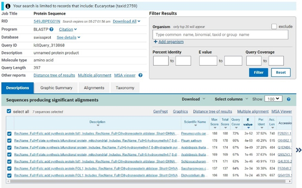
Struktura#
Struktura mojega proteina še ni bila določena, zato sem aminokislinsko zaporedje vnesla v alphafold2, ki je dobro napovedal strukturo (slike 23, 24 in 25). Najbolj natančno napovedane regije so sekundarne strukture z modro barvo, medtem ko so gibljive zanke in konci slabše zanesljivi, kar prikazujeta rumena in rdeča barva (slika 26).
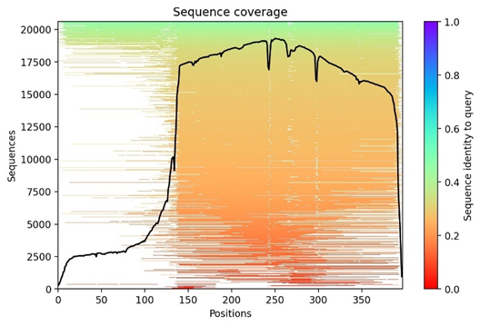
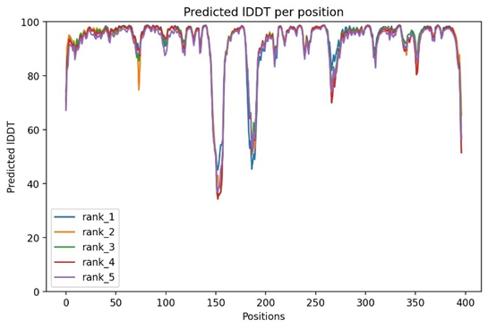
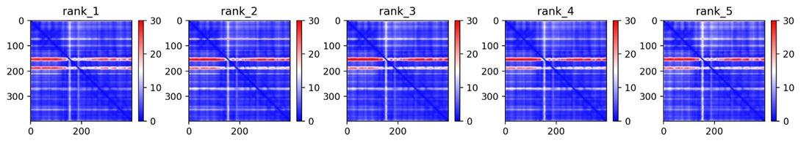
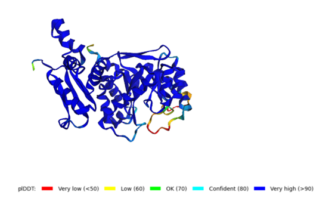
Strukturo sem pokazala tudi v programu UCSF Chimera (slika 27 in seja 1).
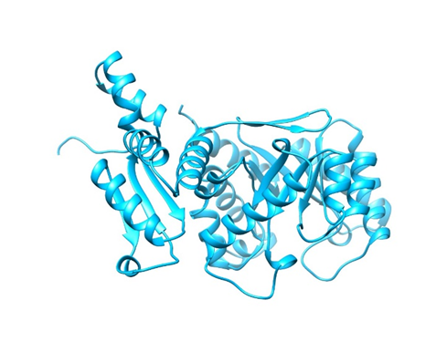
Strukturo mojega proteina sem primerjala s strukturo najbolj podobnega evkariontskega proteina, in sicer proteina za sintezo folne kisline iz glive Pneumocystis jiroveci in strukturi prikazala v USCF Chimera (slika 28 in seja 2). Iz parametrov poravnave v programu DALI vidimo, da imata proteina strukturno 34% identičnost, visoka vrednost RMSD s 4,9 Å pa tudi potrjuje, da imata proteina le malo enakih regij (slika 29).
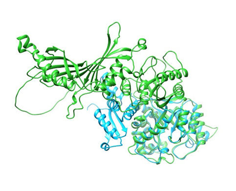
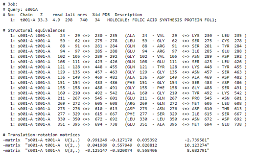
Strukturo mojega proteina sem primerjala še z najbolj podobnim prokariontskim proteinom dihidropteroat sintaze iz bakterije Bacillus subtilis in obe strukturi prikazala v UCSF Chimera (slika 30 in seja 3). Glede na parametre poravnave v programu DALI vidimo, da sta si strukturi precej podobni, saj imata nizko vrednost RMSD z 1,6 Å (slika 31). S tem sem potrdila, da je moj protein bolj podoben prokariontskim proteinom kot evkariontskim.
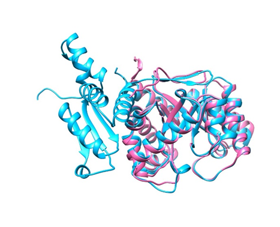
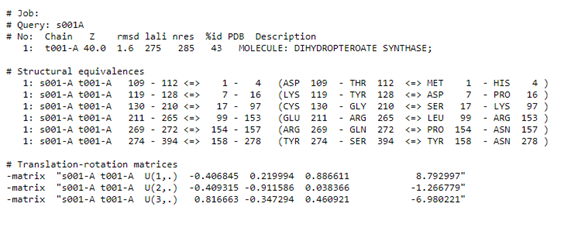